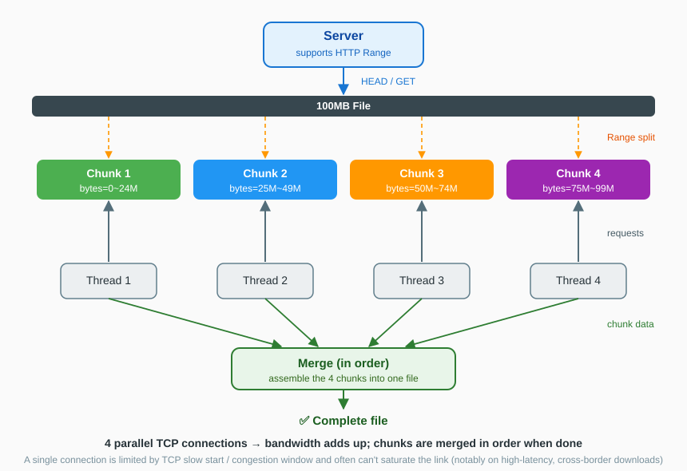
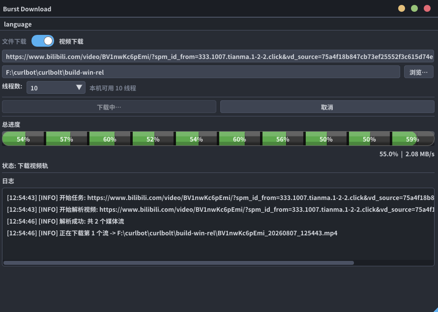

Burst Download
Open-source, cross-platform download manager — multi-threaded chunking, resume support and built-in video download.
HTTP Range chunking with 1–8 parallel connections saturates your bandwidth on high-latency links. One command downloads large files, and the same binary downloads and auto-merges videos from Bilibili, YouTube and more.
🇨🇳 中文说明见 GitHub 中文 README
Features
Everything you expect from a serious downloader — without ads, bundles or account walls.
Multi-threaded chunking
1–8 concurrent HTTP Range connections (adaptive to your CPU cores) to push past single-connection TCP limits and saturate your bandwidth.
Resume support
Interrupted downloads continue from where they stopped — chunk-level metadata means only unfinished pieces are re-fetched.
Video download
Paste a Bilibili or YouTube page URL, and Burst resolves the stream, downloads video + audio tracks in parallel and merges them into one file.
Zero-dependency binaries
Release builds are single files with curl, Python and FFmpeg statically linked. Unzip (Windows) or chmod +x (Linux) and run.
GUI + CLI in one binary
Launch without arguments for the desktop GUI, or use the terminal CLI for scripting and servers. Same binary, both modes.
Privacy-friendly
No ads, no telemetry, no account. Cookie and Referer support is there when a site needs it, and stays under your control.
How it works
Why multiple connections are faster than one — especially on high-latency or cross-border links.

Screenshots
The desktop GUI — dark theme, live progress, pause/resume and a four-stage video pipeline.

Video download
One command, any supported site. DASH streams (separate video + audio) are downloaded in parallel and auto-merged into a single file.
# Download a Bilibili video (auto-resolve + multi-threaded download)
./burst --video "https://www.bilibili.com/video/BVxxxxxxxx" -o movie
# Bilibili HD (720p+), reading your logged-in browser cookies
./burst --video "https://www.bilibili.com/video/BVxxxxxxxx" -o movie --cookies-from-browser chrome
# YouTube and other popular sites
./burst --video "https://www.youtube.com/watch?v=xxxxx" -o clipOutput container is chosen by the video codec: VP9/AV1 tracks become .mkv, everything else .mp4. Parsers update online (--update-parser), so site changes don't force a rebuild.
Download & install
Grab the latest release from the official website or the GitHub Releases mirror.
| Platform | Package | Run |
|---|---|---|
| Windows x86_64 | burst-windows-x86_64.zip | Unzip, double-click burst.exe |
| Linux x86_64 | burst-linux-x86_64 | chmod +x burst && ./burst |
| Linux ARM64 | burst-linux-aarch64 | chmod +x burst && ./burst |
# CLI quick start
./burst https://example.com/file.iso -o file.iso -t 8 --timeout 30
# See all options
./burst --helpPackage managers (winget / scoop / Homebrew / apt) are on the roadmap — watch the repository to get notified.
Good to know
✅ Works best with
GitHub Releases, software mirrors, CDNs and other Range-capable static resources; large files like ISOs, datasets and model weights; direct video streams.
❌ Not a magic bullet
Account-throttled clouds (e.g. Baidu Pan) limit speed server-side — more threads won't help. Servers without Range support automatically fall back to single-threaded download.
⚖️ Legal note
Use Burst only for content you have the right to download — personal backups, study material, public-domain or CC-licensed assets. Users are responsible for their own use.